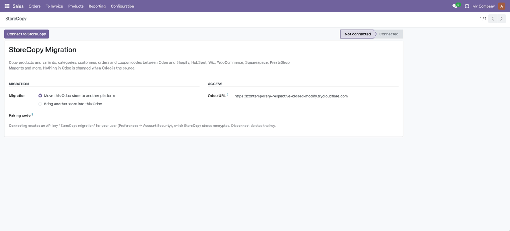
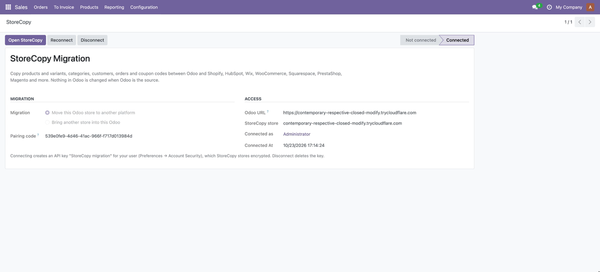
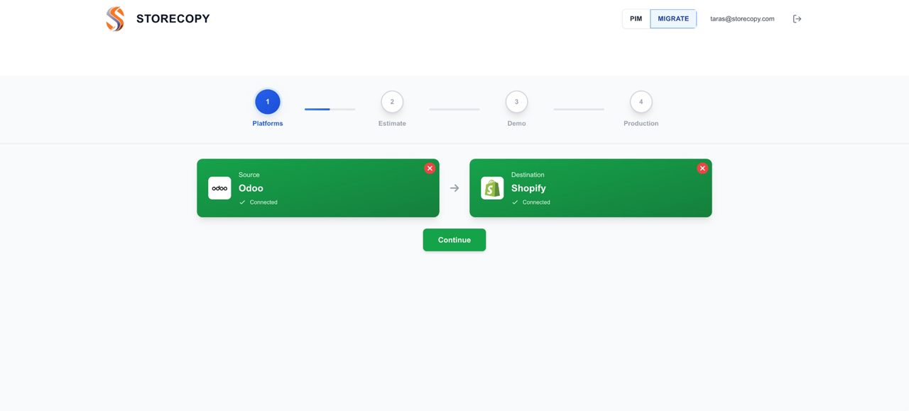
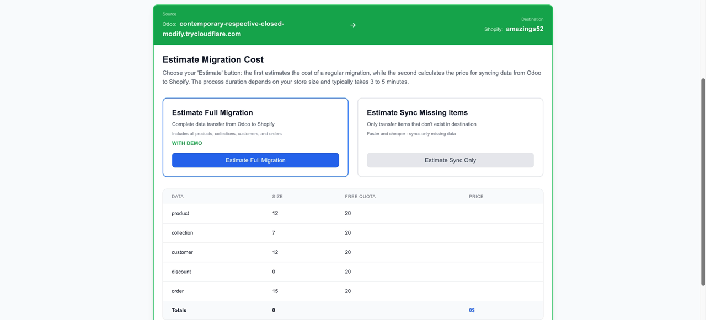
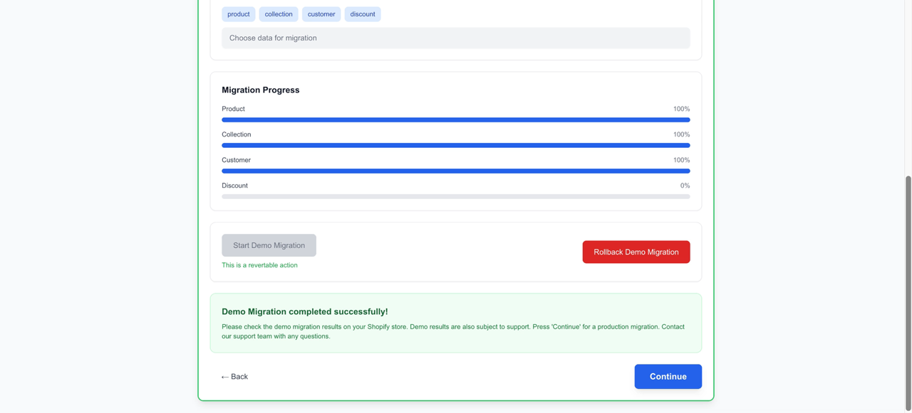
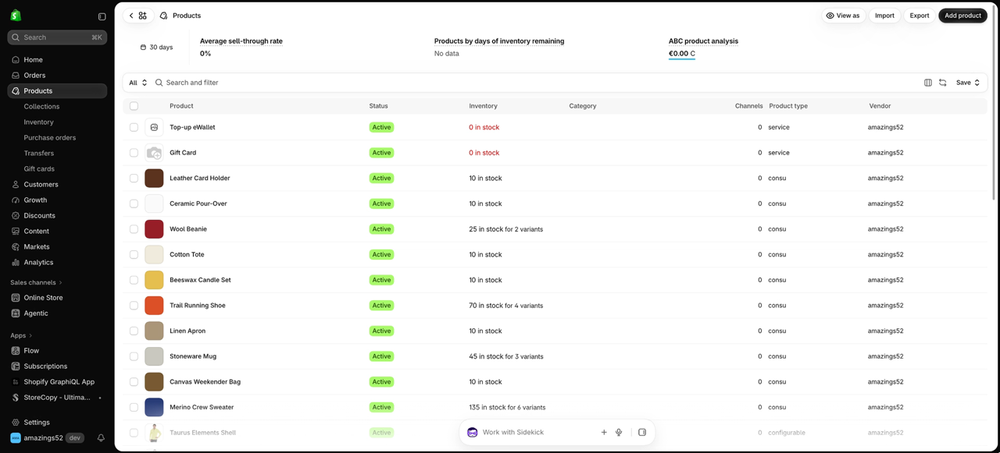

StoreCopy copies your e-commerce data (catalog, customers, orders and coupon codes) between Odoo and Shopify, WooCommerce, Wix, Squarespace, Square Online, PrestaShop, Magento, Shopware, OpenCart, GoDaddy and Tiendanube, among other e-commerce platforms.
HubSpot: products, contacts and orders. Categories, coupons and CRM records (companies, deals, activities) are not migrated.
When Odoo is the source, StoreCopy only reads. Your Odoo must be reachable from the internet (Odoo.sh or your own server). Questions: support@storecopy.com.
In Odoo, open StoreCopy, choose the direction and click Connect to StoreCopy.

StoreCopy creates an API key for your user and opens the migration wizard.

On storecopy.com both stores are connected: Odoo as the source, Shopify as the destination.

The free estimate counts what will be copied and shows the price.

Run a free demo migration (up to 20 items per category) and roll it back with one click.

Products arrive with descriptions, images, tags, prices and their size and color variants.
